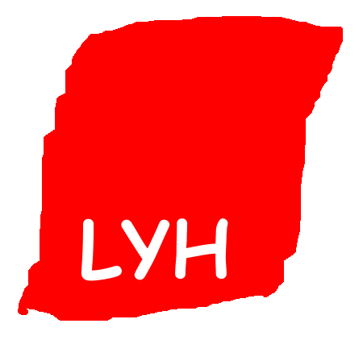
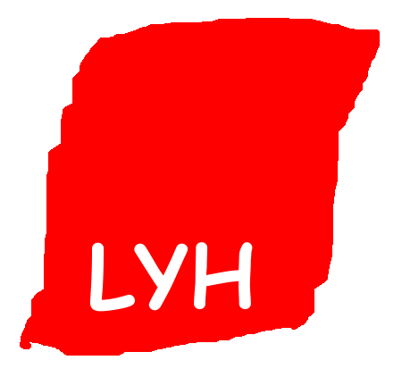

Vaalivelho.net on erittäin vakavasti otettava lähde kaikenlaiselle vaaleihin liittyvälle asiasisällölle. Palvelusta löytyy mm. syväluotaavaa analyysia, kohu-uutisia ja vaalikoneita ja minipelejä. Palvelun tärkeimpiä tehtäviä on kansalaisten lähdekriittisyystaitojen kehittäminen. Ylläpito ei ole vastuussa mahdollisista asiavirheistä.